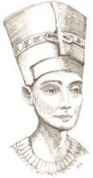

Mısır sanatının en ünlü çalışmalarından biri olan kireçtaşından yapılmış Nefertiti büstü, 1912 yılında Alman arkeolog Ludwig Borchardt tarafından modern Mısır’daki Tell el-Amarna kasabası yakınlarında keşfedilmiştir. Büst antik çağ heykeltıraşlarından Thutmose’nin atölyesinde bulunmuş ve kırık çömlek parçaları gibi gösterilerek gizlice ülke dışına çıkarılmıştır.
Nefertiti, MÖ 1353 ile 1335 arasında Mısır’ı yöneten Firavun IV. Amenhotep’in gözde kraliçesiydi. Amentohep, yönetimi sırasında ismini “Güneş Tanrısı Aten’e hizmet eden” anlamına gelen Akhenaton olarak değiştirdi ve ahlaka vurgu yapan yeni, tektanrıcı bir dini benimsedi. Nefertiti, neredeyse kocasınınkine denk, yüksek bir mevkiye sahip oldu. Bazı uzmanlar yeni dinin arkasında onun olduğuna ve hatta bir süreliğine ülkeyi firavunla beraber yönettiğine inanmaktadır. Akhenaton’un ölümünden sonra o ve güçlü karısının neredeyse tüm izleri belki de reddettikleri dinin rahipleri tarafından yok edilmiştir.

Yaklaşık 50 santimetrelik ve 3400 yıllık Nefertiti büstü neredeyse hiç zarar görmemiş bir halde bulunmuştur. Büstün sadece kulakmemeleri kırıktır. Ancak bu eser tamamlanmadan bırakılmıştır, çünkü sol göz çukuru hiçbir zaman doldurulmamış gibi görünmektedir. Thutmose’nin bu büstü öğrencileri için bir model olarak kullanmış olması da muhtemeldir. Büstün kraliçeye mi benzediği, yoksa ideal bir güzelliği mi tasvir ettiği net olarak bilinmemektedir.
Discovery Channel tarafından desteklenen İngiliz arkeolog Joann Fletcher, 2003 yılında daha önceden keşfedilen bir mumyanın Nefertiti’ninki olduğunu öne sürerek tartışma yarattı. Önemli kanıtlar sunmasına rağmen, Mısırlı otoriteler onun iddialarını reddettiler.
Büst günümüzde Berlin’deki Neues Müzesi’nde görülebilir. Sadece Mısır’ın en tanınmış sanat eserlerinden biri değil, aynı zamanda kadın güzelliğinin de bir modeli olmayı sürdürmekte ve “Güzel olan geldi” anlamındaki Nefertiti ismine yeni bir anlam katmaktadır.
EK BİLGİLER:
1. II. Dünya Savaşı’nın son günlerinde Nefertiti’nin büstü Berlin’in Sovyet işgali altındaki bölgesinden çıkarıldı ve kime ait olduğu konusunda büyük tartışmalar yarattı. Büst, 2005’te iade edildi.
2. Nefertiti adı bir google aramasında 472.000[1] sonuç veriyor. Bu, imajını yirmi birinci yüzyılda da gücünü koruduğunun bir göstergesidir.
3. Kendilerini “Little Warsaw” olarak adlandıran bir çift Macar sanatçı, şeffaf bir giysi giymiş, kafası olmayan bir kadın heykelinin üzerine Nefertiti’nin büstünü yerleştirerek yakın zamanda yeni bir tartışma yarattılar.